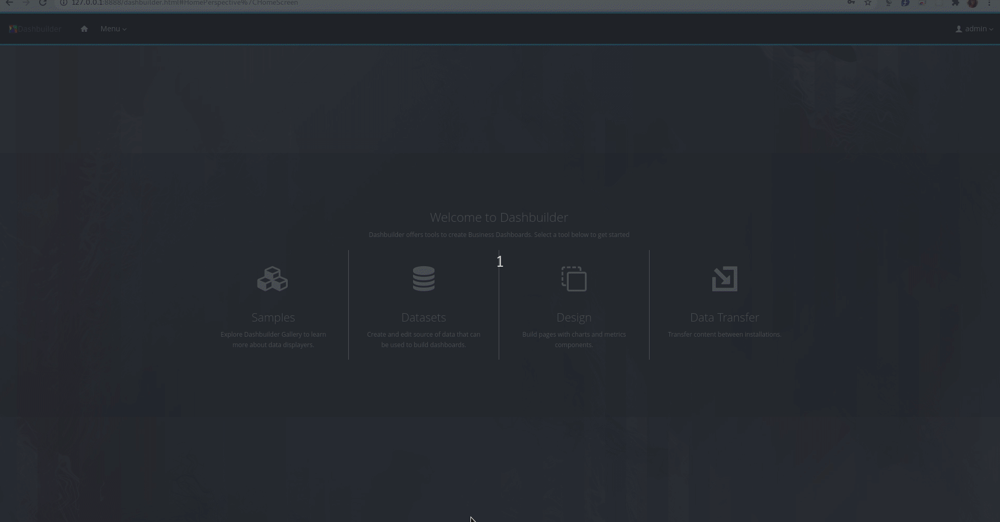

In the last post, we walked you through the process of adding CSV datasets for authoring dashboards in DashBuilder. If this is your first time here, DashBuilder is a standalone tool that is also integrated into Business Central to be used by the Datasets editor and Content Manager page for creating dashboards and reporting. Don’t forget to go through the DashBuilder Getting Started guide to familiarize yourself with the terminology, if you are a first-time user.
Dashboards are quintessential ways of representing complex data indicating key performance indicators(KPIs), metrics, and other key data points related to business or specific processes accurately and precisely.
When it comes to building dashboards, you can configure the dashboards to consume your own datasets in DashBuilder from a variety of sources like Bean, CSV, SQL, Prometheus, Elastic Search, Kafka, and Execution server. In this post, you will learn how to add and configure a Prometheus dataset for your dashboards.
About Prometheus
Prometheus is a systems monitoring and alerting toolkit which can be used to collect and visualize time series data via a multi-dimensional data model identified by metric name and key/value pairs. It uses PromQL, a flexible query language to leverage this dimensionality. Head over to the official Prometheus website for more details.
Add and configure Prometheus datasets on DashBuilder
Log in to DashBuilder. You will see the homepage which resembles the screen below.
DashBuilder Home page
In order to add a dataset, select Datasets from the menu. Alternatively, you can also click on the “Menu” dropdown on the top left corner beside the DashBuilder logo on the navigation bar. You will now see two headings, “DashBuilder” and “Administration”. Click on “Datasets” under Administration. You will see the Dataset Authoring home page with instructions to add datasets, create displayers and new dashboards.Data Set Authoring Home page
Now, you can either click on the “New Data Set” on the top left corner beside “Data Set Explorer” or click on the “new data set” hyperlink in Step 1. You will now see a Data Set creation wizard screen that shows all dataset providers like Bean, CSV, SQL, Elastic Search, and so on.Data Set Creation Wizard Page
Select “Prometheus” from the list of provider types. You will now see the following screen to add your Prometheus data sets with a form that asks you to add details about the Prometheus data set like Server URL, Query etc.Prometheus Settings page
Start a Prometheus server. In the Configuration tab, the first field is “UUID”, which stands for the data set’s unique identifier, which is auto-generated. Enter a name for your data set against the “Name” field, which will help you identify your data set while adding components. For the “Server URL”, just add the Prometheus server URL, the default URL is http://localhost:9090. Against the “Query” field, write the PromQL query to retrieve data for this data set. If you are confused about the role of the fields, please hover on the question mark icons beside the fields or the text boxes adjacent to them. Click on Test to preview your dataset.
You are now on the Preview tab. You can now have a look at the data columns and add filters in the tabs above the dataset. You can also edit the types or delete the columns that you don’t require by unchecking the checkbox beside the columns provided on the left side. If the preview isn’t what you expected, you can switch back to the Configuration tab by clicking on it and make changes. If you are satisfied with the preview, click on the “Next” button.Preview tab in Data Set creation wizard
Enter required comments in the Save modal and click on the Save button. Your dataset has been added and configured. You will now be directed back to the Data Set Authoring Home page. You can now see a dataset on the left pane. When you add multiple datasets, you can see the list of all of them on the left pane. Here is a screen recording of the full flow. Here, I have added a sample dataset using the Prometheus Getting Started guide.

Adding and configuring Prometheus datasets on DashBuilder You can now click on the Menu dropdown on the navigation bar and select Content Manager to create pages and dashboards. The “Time Series Chart” component in the “Reporting” section supports time series datasets. Ensure that the columns are well configured with proper types in the “Data” section of the “Displayer Editor” after dragging the component. The resulting dataset for time-series component can contain multiple series, but the columns should be TIME, followed by SERIES followed by VALUES for component property “transposed: true” and TIME, followed by Series VALUES for component property “transposed: false”, you can choose to configure the same while configuring Datasets or with the “Data” tab after dragging the time-series component to the page. Make sure that the columns are properly configured. Sometimes, some columns are missing when it comes to real-time data, but they will appear as soon as the metrics collection process starts. You can refer to the dashboard zip that I created here.Refresh dropdown in Display tab If you are trying to get metrics and visualize real-time data, make sure to head over to the “Refresh” dropdown in the “Display” tab and set a value in seconds in the “Refresh” field that the component can use to constantly get real-time data.
Conclusion
With the help of this post, you will be able to add and configure Prometheus datasets to be consumed by your dashboards. In the upcoming posts, we will add walkthroughs of the other dataset providers, so stay tuned!